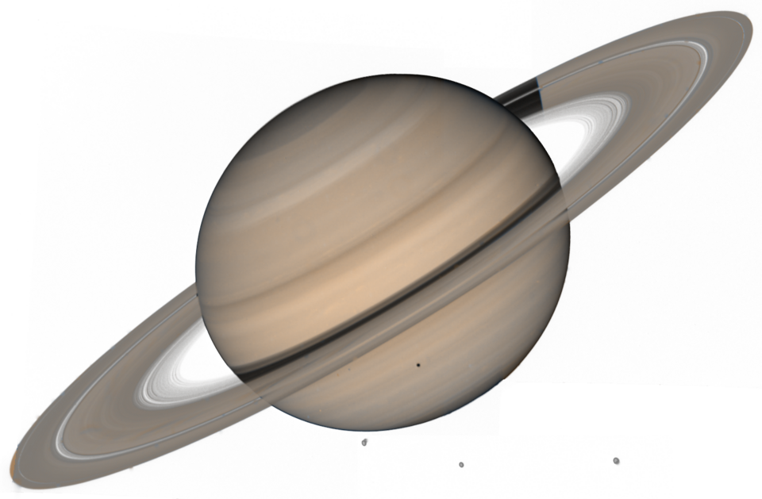
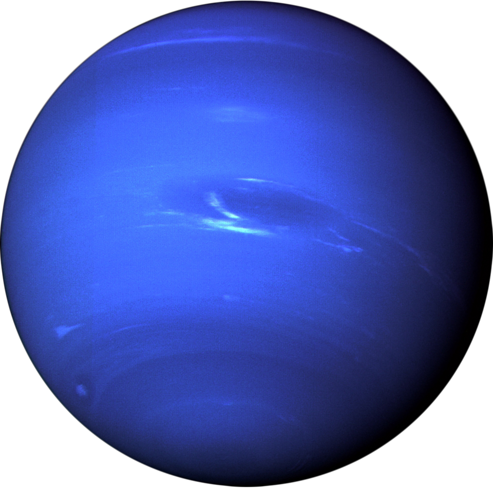

A short comparison of characteristics between planets.
| Earth | Mars | Saturn | Neptune | |
|---|---|---|---|---|
| Image of | |
|
 |  |
| Mass | 5.97 kg | 0.642 kg | 568 kg | 102 kg |
| Diameter | 12,756 km | 6792 km | 120,536 km | 49,528 km |
| Density | 5514 kg | 3934 kg | 687 kg | 1638 kg |
| Gravity | 9.8 m/s | 3.7 m/s | 9.0 m/s | 11.0 m/s |
| Distance from Sun | 149.6 km | 228.0 km | 1432.0 km | 4515.0 km |
| Number of Moons | 1 | 2 | 274 | 16 |
| Has Ring System | No | No | Yes | Yes |